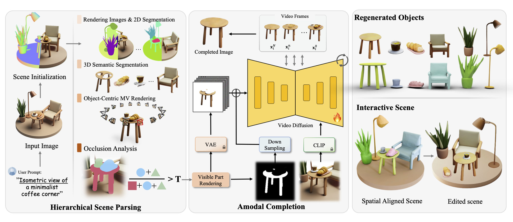

Pipeline
Our hierarchical framework generates 3D scenes with compositional identities through three main stages. First, we create a 3D scene from a generated isometric view. Next, we perform scene parsing to obtain precise object segmentation, followed by multi-view rendering and detailed occlusion analysis for each identified instance. Finally, we apply our video-diffusion-based amodal completion to generate complete views of each instance, which serve as guidance for regenerating intact objects with proper spatial alignment in the scene. The resulting 3D scene features fully compositional identities, facilitating user-directed modifications like interactive scene editing.